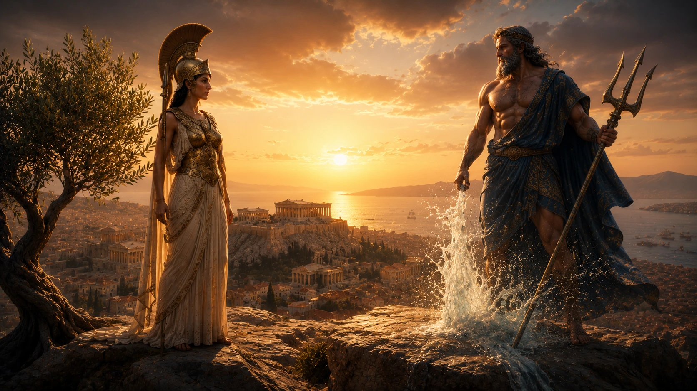
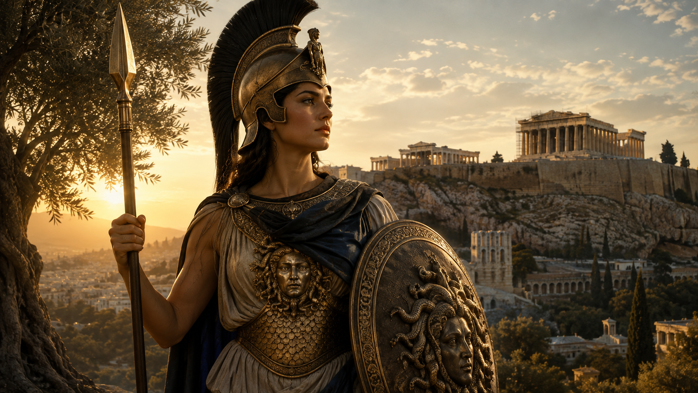
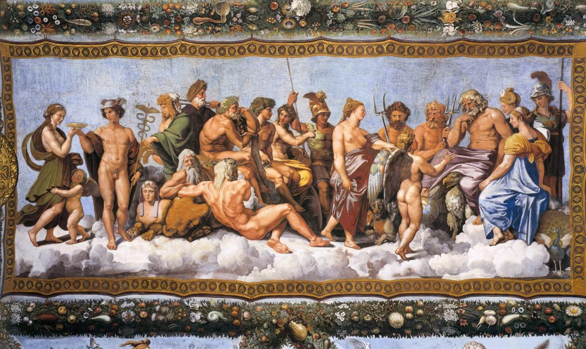

Arachne Efsanesi: Athena'ya Meydan Okuyan Dokumacı Gerçekten mi Kazandı?
Hubris, ilahi otorite ve sanat arasındaki çatışma. Arachne'nin yarışmayı kazanıp kazanmadığı ve örümceğe dönüşümünün perde arkası.
Olimpos'un güçlü tanrıları, yarı tanrı kahramanlar ve unutulmaz efsaneler. Zeus, Athena, Poseidon ve diğer Yunan tanrılarının destansı hikâyelerini keşfedin.
Hubris, ilahi otorite ve sanat arasındaki çatışma. Arachne'nin yarışmayı kazanıp kazanmadığı ve örümceğe dönüşümünün perde arkası.

İki büyük tanrının şehrin koruyuculuğu için yarışması: Poseidon'un deniz gücü mü, Athena'nın zeytin ağacı mı? Atina'nın kimliğini belirleyen efsane.
Persephone'nin annesi, toprağın verimliliğinin sahibi. Kızını kaybedince dünyanın bereketini çeken ve mevsimlerin doğuşuna yol açan tanrıça.
Hades ile Persephone'nin hikâyesi, Demeter'in yasası, nar tanelerinin sırrı ve mevsimlerin kökenini açıklayan efsane.

Zeus'un cezası, Prometheus'un ateşi ve insanlığın kaderine dair en büyük mit. Pandora'nın kutusunda kalan umudun gerçek anlamı.
Üç dişli yabası, atlarla ilişkisi, Athena ile rekabeti ve Odysseus'u yıllarca cezalandırması. Poseidon'un tüm hikâyesi.
Titanomakhia'dan paylaşıma, Kerberos'tan görünmezlik miğferine, Persephone'nin kaçırılmasından ölümlülerin yargılanmasına. Hades'in tüm hikâyesi.

Zeus'un başından doğuşu, Atina'nın koruyucusu oluşu, kahramanlara rehberliği ve Yunan medeniyetindeki merkezi rolü.

Titanomakhia, sembolleri, çocukları ve Yunan mitolojisindeki merkezi rolü. Tanrıların kralının hikâyesi.
Medusa'nın ölümünden doğuşu, Bellerophon ile macerası, Khimaira savaşı ve Olimpos'a yükselişi. Pegasus'un gerçek mitolojik hikâyesi.

Graialar, nimfler, Athena'nın kalkanı ve yansıma tekniği. Perseus'un imkânsız görevi nasıl başardığının tüm detayları.

Ovidius'un anlatısı, kutsal tapınak olayı, Poseidon'un rolü ve Athena'nın kararının antik kaynaklardaki farklı yorumları.

Medusa'nın hikâyesi, yılan saçları, taşa çeviren bakışları, Perseus tarafından öldürülmesi ve Athena'nın kalkanındaki sembolik anlamı.

Antik Yunan'da 12 Olimposlu listesi neden sabit değildi? Olimpos'un gerçek anlamını keşfedin.